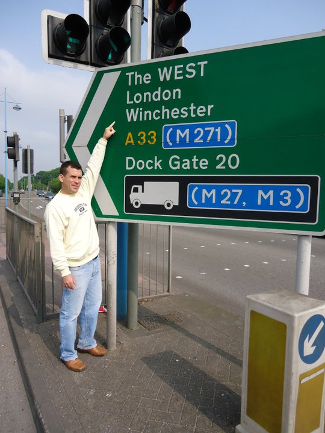

Londres é a capital e maior cidade do Reino Unido, um importante centro econômico,
financeiro e cultural do mundo. Fundada pelos romanos há quase 2000 anos, é uma metrópole diversa,
com uma população multicultural e grande influência global. A cidade combina história e modernidade,
oferecendo atrações culturais e uma infraestrutura de transporte avançada.